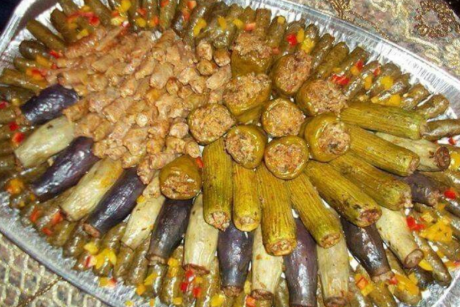

Mahshi

Description
Mahshi is one of the main platters in Egyptian banquets specially in Ramadan when friends and family gather to have iftar at sundown. It is by far the most common dish in Egypt and the Middle East along with the Koshari . It is an inexpensive meal - if you did not serve meat with it- so it is eaten by the poor and the rich in Egypt.
Mahshi is basically veggies stuffed with rice mixture. It has been always a rocket science for me, specially the stuffed grape leaves and cabbage rolls , as they require some skills in rolling them. But once you get the hang of it, you will stuff almost any veggies you like just give it a try and you will see for your self ... It is an addicting process 🙂
Ingredients
- 3 Tablespoons olive oil3 Tablespoons olive oil.
- 1 medium yellow onion Chopped.
- 2 Tablespoons tomato paste.
- 1 can (16oz) tomato sauce.
- 2 cups short grain rice
- 1 cup fresh parsley chopped
- 1/2 cup fresh cilantro chopped
- 1/3 cup fresh dill chopped
- 1 Tablespoon dry mint
- 1/2 teaspoon ground black pepper.
- 1/2 teaspoon salt or to taste.
Instructions
Make the rice mixture:
- In a pot over medium heat, add oil and then sauté onions until translucent for about 2-3 minutes.
- Add the tomato sauce and paste. Stir to dissolve tomato paste.
- When it starts bubbling, add rice, spices and herbs cook for just two minutes.
- Turn heat off and set aside to cool down.
Prepare the veggies:
- Wash the veggies thoroughly and clean them well
- Core veggies and make sure not to tear the walls especially when making zucchini or eggplants.
- For Anaheim pepper, I usually like to cut it in half for easy stuffing and make sure to buy long straight ones.
Stuff the veggies:
- Stuff each one with the rice mixture making sure not to reach the top, so basically you want to leave about 1/2 cm of the top of your vegetable.
- Rice will expand after cooking and if you are overstuffing the veggies, rice will come off. Not that it will taste bad but the presentation will not be as fancy.
- Arrange herbs stems, the inside of your veggies that you just took out, lemon slices, tomato slices or onion slices at the bottom of your cooking pot to prevent scorching.
- Arrange the stuffed veggies in your pot.
Cook:
- Dissolve bouillon and tomato paste in the hot water.
- Pour into the pot so that the cooking liquid is halfway through the veggies layers.
- Place pot on medium high, bring to a boil then reduce heat and simmer for 40 minutes until veggies are cooked.
- Wait for it to cool down a bit and serve.(don't)